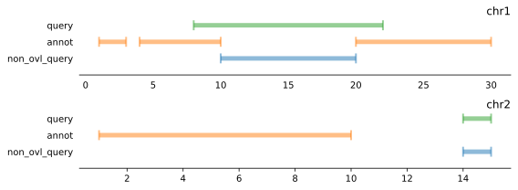

import genominterv
import pandas as pdJupyter notebook
genomeinterv provides support for working with intervals on genomes. A genomic interval is specified as a chromosome, start, and end. It is half-open so that a value x is in an interval (start, end) included in the inrval if start <= x and x < end. All functions take pandas.DataFrames as arguments. These data frames must include chrom, start, and end columns.
See the library reference for detailed documentation of each function and decorator.
Set operations
The three functions interval_diff, interval_intersect, and interval_union do the standard difference, intersection and union set operations on two sets of genomic intervals.
The intervals returned from all three functions are collapsed to produce non-overlapping intervals. The genomic intervals in each set must be non-overlapping. This can be achieved using function interval_collapse, which produces the union of genomic intervals in a single set genomic of intervals.
Try it out on two sets of intervals: annot and query:
intervals = [('chr1', 1, 3), ('chr1', 4, 6), ('chr1', 5, 10), ('chr1', 25, 30), ('chr1', 20, 27), ('chr2', 1, 10), ('chr2', 1, 3)]
annot = pd.DataFrame.from_records(intervals, columns=['chrom', 'start', 'end'])
annot| chrom | start | end | |
|---|---|---|---|
| 0 | chr1 | 1 | 3 |
| 1 | chr1 | 4 | 6 |
| 2 | chr1 | 5 | 10 |
| 3 | chr1 | 25 | 30 |
| 4 | chr1 | 20 | 27 |
| 5 | chr2 | 1 | 10 |
| 6 | chr2 | 1 | 3 |
intervals = [('chr1', 8, 22), ('chr2', 14, 15)]
query = pd.DataFrame.from_records(intervals, columns=['chrom', 'start', 'end'])
query| chrom | start | end | |
|---|---|---|---|
| 0 | chr1 | 8 | 22 |
| 1 | chr2 | 14 | 15 |
from genominterv import interval_collapse
annot_collapsed = interval_collapse(annot)
annot_collapsed| index | start | end | chrom | |
|---|---|---|---|---|
| 0 | 0 | 1 | 3 | chr1 |
| 1 | 1 | 4 | 10 | chr1 |
| 2 | 2 | 20 | 30 | chr1 |
| 3 | 0 | 1 | 10 | chr2 |
annot = annot_collapsedfrom genominterv import interval_diff
non_ovl_query = interval_diff(query, annot)
non_ovl_query| index | start | end | chrom | |
|---|---|---|---|---|
| 0 | 0 | 10 | 20 | chr1 |
| 1 | 0 | 14 | 15 | chr2 |

from genominterv import interval_intersect
intersection = interval_intersect(query, annot)
intersection| index | start | end | chrom | |
|---|---|---|---|---|
| 0 | 0 | 8 | 10 | chr1 |
| 1 | 1 | 20 | 22 | chr1 |
from genominterv import interval_union
union = interval_union(query, annot)
union| index | start | end | chrom | |
|---|---|---|---|---|
| 0 | 0 | 1 | 3 | chr1 |
| 1 | 1 | 4 | 30 | chr1 |
| 2 | 0 | 1 | 10 | chr2 |
| 3 | 1 | 14 | 15 | chr2 |
To make it easy to create other interval functions that work across chromosomes, the module provides a genomic decorator that can be applied to functions that operate lists of (start, end) tuples. Applying the decorator changes the signature of a function to make it operate on DataFrames that include chrom, start, and end columns.
Here is an example function that shifts the interval coordinates by 1000bp:
intervals = pd.DataFrame(dict(chrom='chrX', start=[1, 20], end=[2, 25]))
intervals| chrom | start | end | |
|---|---|---|---|
| 0 | chrX | 1 | 2 |
| 1 | chrX | 20 | 25 |
from genominterv import genomic
@genomic
def inverval_shift(interv):
return [(start+1000, end+1000) for (start, end) in interv]
shifted = inverval_shift(intervals)
shifted| index | start | end | chrom | |
|---|---|---|---|---|
| 0 | 0 | 1001 | 1002 | chrX |
| 1 | 1 | 1020 | 1025 | chrX |
Remapping functions
The function remap converts coordinates a single interval into distance to the closest interval in a second set:
single_interval = (300, 400)
other_intervals = [(0, 100), (1000, 1100)]
genominterv.remap(single_interval, other_intervals)[(200, 300)]Same but retaining info about which annotation the interval is proximal to:
genominterv.remap((300, 400), [(0, 100), (1000, 1100)], include_prox_coord=True)[(200, 300, 0, 100)]The function interval_distance converts coordinates of one set of genomic intervals into distances to the closest interval in a second set. interval_relative_distance does the same but returns relative distances.
annot = pd.DataFrame(dict(chrom='chrX', start=[1, 20], end=[2, 25]))
annot| chrom | start | end | |
|---|---|---|---|
| 0 | chrX | 1 | 2 |
| 1 | chrX | 20 | 25 |
query = pd.DataFrame(dict(chrom='chrX', start=[3, 5], end=[15, 7], some_data=['foo', 'bar'], other_data=['A', 'B']))
query| chrom | start | end | some_data | other_data | |
|---|---|---|---|---|---|
| 0 | chrX | 3 | 15 | foo | A |
| 1 | chrX | 5 | 7 | bar | B |
from genominterv import interval_distance
interval_distance(query, annot)| index | start | end | chrom | |
|---|---|---|---|---|
| 0 | 0 | 1 | 9 | chrX |
| 1 | 1 | -5 | -9 | chrX |
| 2 | 2 | 3 | 5 | chrX |
from genominterv import interval_relative_distance
interval_relative_distance(query, annot)| index | start | end | chrom | |
|---|---|---|---|---|
| 0 | 0 | 0.055556 | 0.500000 | chrX |
| 1 | 1 | -0.277778 | -0.500000 | chrX |
| 2 | 2 | 0.166667 | 0.277778 | chrX |
The most useful function for most applications is remap_interval_data, which does the remapping while preserving all the information in the query data frame. It also reports the start and end coordinates before remapping (ends with *_orig) and the coordinates of the most proximal segment in the annotation set (*_prox).
from genominterv import remap_interval_data
remap_interval_data(query, annot)| start | end | start_prox | end_prox | chrom | start_orig | end_orig | some_data | other_data | |
|---|---|---|---|---|---|---|---|---|---|
| 0 | 1 | 9 | 1 | 2 | chrX | 3 | 15 | foo | A |
| 1 | -5 | -9 | 20 | 25 | chrX | 3 | 15 | foo | A |
| 2 | 3 | 5 | 1 | 2 | chrX | 5 | 7 | bar | B |
Ready-made tests
proximity_test computes tests if intervals in one set is significantly proximal to intervals in another set.
from genominterv import proximity_test
annot = pd.DataFrame(dict(chrom='chr1',
start=list(range(1, 1000, 100)),
end=list(range(20, 1020, 100))))
query = pd.DataFrame(dict(chrom='chr1',
start=list(range(1, 1000, 10)),
end=list(range(10, 1010, 10))))The annotation intervals cannot overlap each other or any of the query intervals:
annot_collapsed = interval_collapse(annot)
non_ovl_query = interval_diff(query, annot_collapsed)proximity_test(non_ovl_query, annot_collapsed)TestResult(statistic=-0.02112359550561797, pvalue=0.6351)Two-set statistics
The module also provides two statistics for relations between sets: jaccard computes the Jaccard index statistic for two sets of genomic intervals.
annot = pd.DataFrame(dict(chrom='chrX', start=[2, 9, 20], end=[4, 14, 25], some_data=['foo', 'bar', 'baz']))
annot| chrom | start | end | some_data | |
|---|---|---|---|---|
| 0 | chrX | 2 | 4 | foo |
| 1 | chrX | 9 | 14 | bar |
| 2 | chrX | 20 | 25 | baz |
query = pd.DataFrame(dict(chrom='chrX', start=[3, 7], end=[5, 10], some_data=['foo', 'bar'], other_data=['A', 'B']))
query| chrom | start | end | some_data | other_data | |
|---|---|---|---|---|---|
| 0 | chrX | 3 | 5 | foo | A |
| 1 | chrX | 7 | 10 | bar | B |
from genominterv import jaccard_stat
jaccard_stat(query, annot)0.13333333333333333Bootstrap decorator
The module provides a bootstrap decorator that turns a function producing a statistic into one that also produces a p-value. The bootstrapping resamples the intervals of the second argument for each chromosome independently. Only required argument to bootstrap is the name of the chromosome assembly used. The decorator works on any function that takes two sets of intervals.
This example does this for the provided jaccard satistic:
from genominterv import bootstrap
@bootstrap('hg19', samples=1000)
def jaccard_test(query, annot):
return jaccard_stat(query, annot)
jaccard_stat, p_value = jaccard_test(query, annot)